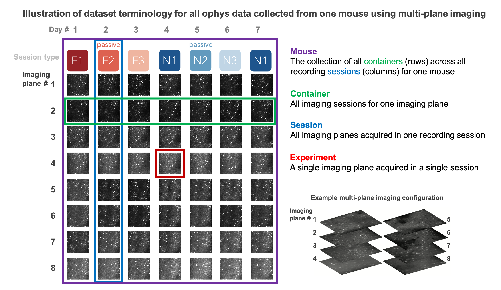

Visual Behavior Ophys Dataset#
The main entry point to the VBO dataset is the VisualBehaviorOphysProjectCache class. This class is responsible for downloading any requested data or metadata as needed and storing it in well known locations. For detailed info about how to access this data, check out this tutorial
We begin by importing the VisualBehaviorOphysProjectCache class.
from allensdk.brain_observatory.behavior.behavior_project_cache import VisualBehaviorOphysProjectCache
/opt/envs/allensdk/lib/python3.8/site-packages/tqdm/auto.py:21: TqdmWarning: IProgress not found. Please update jupyter and ipywidgets. See https://ipywidgets.readthedocs.io/en/stable/user_install.html
from .autonotebook import tqdm as notebook_tqdm
Now we can specify our cache directory and set up the cache.
# this path should point to the location of the dataset on your platform
cache_dir = '/root/capsule/data/visual-behavior-ophys/'
cache = VisualBehaviorOphysProjectCache.from_local_cache(
cache_dir=cache_dir, use_static_cache=True)
---------------------------------------------------------------------------
RuntimeError Traceback (most recent call last)
Cell In[2], line 4
1 # this path should point to the location of the dataset on your platform
2 cache_dir = '/root/capsule/data/visual-behavior-ophys/'
----> 4 cache = VisualBehaviorOphysProjectCache.from_local_cache(
5 cache_dir=cache_dir, use_static_cache=True)
File /opt/envs/allensdk/lib/python3.8/site-packages/allensdk/brain_observatory/behavior/behavior_project_cache/project_cache_base.py:110, in ProjectCacheBase.from_local_cache(cls, cache_dir, use_static_cache)
87 @classmethod
88 def from_local_cache(
89 cls,
90 cache_dir: Union[str, Path],
91 use_static_cache: bool = False
92 ) -> "ProjectCacheBase":
93 """instantiates this object with a local cache.
94
95 Parameters
(...)
108
109 """
--> 110 fetch_api = cls.cloud_api_class().from_local_cache(
111 cache_dir,
112 project_name=cls.PROJECT_NAME,
113 ui_class_name=cls.__name__,
114 use_static_cache=use_static_cache
115 )
116 return cls(fetch_api=fetch_api)
File /opt/envs/allensdk/lib/python3.8/site-packages/allensdk/brain_observatory/behavior/behavior_project_cache/project_apis/data_io/project_cloud_api_base.py:143, in ProjectCloudApiBase.from_local_cache(cls, cache_dir, project_name, ui_class_name, use_static_cache)
122 """instantiates this object with a local cache.
123
124 Parameters
(...)
140
141 """
142 if use_static_cache:
--> 143 cache = StaticLocalCache(
144 cache_dir,
145 project_name,
146 ui_class_name=ui_class_name
147 )
148 else:
149 cache = LocalCache(
150 cache_dir,
151 project_name,
152 ui_class_name=ui_class_name
153 )
File /opt/envs/allensdk/lib/python3.8/site-packages/allensdk/api/cloud_cache/cloud_cache.py:1245, in StaticLocalCache.__init__(self, cache_dir, project_name, ui_class_name)
1244 def __init__(self, cache_dir, project_name, ui_class_name=None):
-> 1245 super().__init__(cache_dir=cache_dir, project_name=project_name,
1246 ui_class_name=ui_class_name)
File /opt/envs/allensdk/lib/python3.8/site-packages/allensdk/api/cloud_cache/cloud_cache.py:78, in BasicLocalCache.__init__(self, cache_dir, project_name, ui_class_name)
75 self._cache_dir = cache_dir
76 self._project_name = project_name
---> 78 self._manifest_file_names = self._list_all_manifests()
File /opt/envs/allensdk/lib/python3.8/site-packages/allensdk/api/cloud_cache/cloud_cache.py:1258, in StaticLocalCache._list_all_manifests(self)
1254 manifest_dir = os.path.join(
1255 self._cache_dir, self.project_name, "manifests"
1256 )
1257 if not os.path.exists(manifest_dir):
-> 1258 raise RuntimeError(
1259 f"Expected the provided cache_dir ({self._cache_dir})"
1260 "to have the following subfolders but it did not: "
1261 f"{self.project_name}/manifests"
1262 )
1264 output = [x for x in os.listdir(manifest_dir)
1265 if re.fullmatch(".*_manifest_v.*.json", x)]
1267 return [self._find_latest_file(output)]
RuntimeError: Expected the provided cache_dir (/root/capsule/data/visual-behavior-ophys/)to have the following subfolders but it did not: visual-behavior-ophys/manifests
We can use the VisualBehaviorOphysProjectCache to explore the parameters of this dataset. Let’s start by examining the cache metadata tables.
VBO Metadata Tables#
The data manifest consists of 4 tables:
behavior_session_tableophys_session_tableophys_experiment_tableophys_cells_table
Behavior sessions#
The behavior_session_table contains metadata for every behavior session in the dataset, including the full training history for each mouse. Accordingly, some behavior sessions have 2-photon data associated with them, and will have a corresponding ophys_session_id, while others took place during training in the behavior facility. The different training stages that mice are progressed through are described by the session_type.
Ophys sessions#
The ophys_session_table contains metadata for every 2-photon imaging (aka optical physiology, or ophys) session in the dataset, associated with a unique ophys_session_id. An ophys session is one continuous recording session under the microscope, and can contain different numbers of imaging planes (aka ophys_experiments) depending on which microscope was used. For imaging sessions using the Scientifica single-plane 2P microscope, there will only be one experiment (aka imaging plane) per session. For Multiscope sessions using the multi-plane 2-photon microscope, there can be up to eight imaging planes per session. Quality Control (QC) is performed on each individual imaging plane within a session, so each can fail QC independent of the others. This means that a Multiscope session may not have exactly eight experiments (imaging planes).
Ophys experiments#
The ophys_experiment_table contains metadata for every ophys experiment in the dataset, which corresponds to a single imaging plane recorded in a single session at a specific imaging_depth and targeted_structure, and associated with a unique ophys_experiment_id. A key part of the experimental design is targeting a given population of neurons, contained in one imaging plane, across multiple days with several different session_types (further described below) to examine the impact of varying sensory and behavioral conditions on single cell responses.
The collection of all imaging sessions for a given imaging plane is referred to as an ophys container, associated with a unique ophys_container_id. If the data for a given session_type does not meet the QC criteria on the first try, an attempt is made to re-acquire the session_type on a different recording day (this is called a retake). Thus each ophys container may contain different numbers of sessions, depending on which sessions and imaging planes passed QC, and how many retakes occured.
Ophys cells#
The `ophys_cells_table` contains the unique IDs of all cells recorded across all experiments. Each cell has two IDs. The `cell_roi_id` is the ID of the cell in a specific session, the `cell_specimen_id` is the ID of the cell after matching across sessions. Thus, the `cell_roi_id` will be unique to a given `ophys_experiment_id` and `ophys_session_id` while the `cell_specimen_id` will be shared across all `phys_session_ids` for a given `ophys_container_id`. As a reminder, the `ophys_container_id` links the same imaging plane recorded across multiple sessions.
To understand the difference between an ophys experiment, an ophys session, and an ophys container, the following schematic can be helpful

Note that this represents a multi-plane imaging dataset. For single-plane imaging, there will only be one plane (one ophys experiment), corresponding to one row of this diagram.
Let’s look at each of these tables in more detail to learn more about what is in the dataset.
Behavior Sessions Table#
In this dataset, mice are trained on a visual change detection task. This task involves a continuous stream of stimuli, and mice learn to lick in response to a change in the stimulus identity to earn a water reward. There are different stages of training in this task, described below. The metadata for each behavior session in the dataset can be found in the behavior_session_table and can be used to identify behavior sessions you may want to analyze.
The behavior_session_table includes every session for every mouse in the dataset, regardless of whether it occured during 2-photon imaging or during behavior training.
Here is how to load the behavior_session_table from the cache
behavior_sessions = cache.get_behavior_session_table()
print(f"Total number of behavior sessions: {len(behavior_sessions)}")
behavior_sessions.head()
This table gives us lots of useful metadata about each behavior session, including the genotype, sex and age of the mouse, the experimental design that was used (indicated by the project_code), the type of session that was run, and whether the session occured under a 2-photon microscope or in the behavior training facility.
behavior_sessions.columns
Here is a brief description of each column:
- age_in_days
int age of mouse in days
- cre_line
string cre driver line for a transgenic mouse
- date_of_acquisition
date time object date and time of experiment acquisition, yyyy-mm-dd hh:mm:ss.
- driver_line
list of string all driver lines for transgenic mouse
- equipment_name
string identifier for equipment data was collected on
- file_id
int lookup id to retrieve NWB file from S3 or the local cache
- full_genotype
string full genotype of transgenic mouse
- indicator
string calcium indicator associated with transgenic mouse reporter line
- mouse_id
int unique identifier for a mouse
- ophys_container_id
int unique identifier for all ophys containers (grouping of ophys experiments for a given imaging plane) associated with the behavior session
- ophys_experiment_id
int unique identifier for all ophys experiments (imaging planes) associated with the behavior session
- ophys_session_id
int unique identifier for the ophys session associated with the behavior session
- prior_exposures_to_image_set
float 64 number of prior sessions where the mouse was exposed to the image set used in the current session, starting at 0 for first exposure
- prior_exposures_to_omissions
int 64 number of prior sessions where the mouse exposed to stimulus omissions, starting at 0 for first exposure
- prior_exposures_to_session_type
int 64 number of prior sessions where the mouse was exposed to the session type of the current session, starting at 0 for first exposure
- project_code
string dataset variant the mouse belongs to, determined by whether single or multi-plane imaging was used, which stimulus set was used during training, and what areas and depths were recorded during ophys
- reporter_line
string reporter line for transgenic mouse
- session_number
float 64 for ophys (non-training) sessions only, session number is the number associated with the session type. (Eg. OPHYS_2_images_A_passive has session_number 2). NaN for training sessions.
- session_type
string type of session indicating whether the session was during behavior training or ophys, which visual stimulus was shown, and whether the session was active behavior or passive imaging
- sex
string sex of the mouse
Mouse specific metadata#
The mouse_id is a 6-digit unique identifier for each experimental animal in the dataset
print('there are ', len(behavior_sessions.mouse_id.unique()), 'mice in the dataset')
The transgenic line determines which neurons are labeled in a given mouse, and what they are labeled with
print('the different transgenic lines included in this dataset are:\n')
print(np.sort(behavior_sessions.full_genotype.unique()))
full_genotype refers to the full name of the transgenic mouse line, including all driver and reporter lines in the cross. driver_line and reporter_line have their own unique columns in the table. The first element of the full_genotype is the cre_line (which also has its own column in the table, and is a subset of driver_line). The cre_line determines which genetically identified neuron type will be labeled by the reporter_line.
print('the different cre lines used in this dataset are:\n')
print(np.sort(behavior_sessions.cre_line.unique()))

In this dataset, there are 3 cre_lines, ‘Slc17a7-IRES2-Cre’, which labels excitatory neurons across all cortical layers, ‘Sst-IRES-Cre’ which labels somatostatin expressing inhibitory interneurons, and ‘Vip-IRES-Cre’, which labels vasoactive intestinal peptide expressing inhibitory interneurons.
There are also 3 reporter_lines, ‘Ai93(TITL-GCaMP6f)’ which expresses the genetically encoded calcium indicator GCaMP6f (f is for ‘fast’, this reporter has fast offset kinetics, but is only moderately sensitive to calcium relative to other sensors) in cre labeled neurons, ‘Ai94(TITL-GCaMP6s)’ which expresses the indicator GCaMP6s (s is for ‘slow’, this reporter is very sensitive to calcium but has slow offset kinetics), and ‘Ai148(TIT2L-GC6f-ICL-tTA2’, which expresses GCaMP6f using a self-enhancing system to achieve higher expression than other reporter lines (which proved necessary to label inhibitory neurons specifically). The specific indicator expressed by each reporter_line also has its own column in the table.
print('the different reporter lines used in this dataset are:\n')
print(np.sort(behavior_sessions.reporter_line.unique()))
print('the different indicators used in this dataset are:\n')
print(np.sort(behavior_sessions.indicator.unique()))
For more information about transgenic lines, see characterization data here: https://observatory.brain-map.org/visualcoding/transgenic
for more information on GCaMP6, see this paper: https://www.nature.com/articles/nature12354
For more information on reporter lines, see these papers: https://doi.org/10.1016/j.neuron.2015.02.022, https://www.sciencedirect.com/science/article/pii/S0092867418308031
How many mice per transgenic line?
behavior_sessions.groupby(['full_genotype', 'mouse_id']).count().reset_index().groupby('full_genotype').count()[['mouse_id']]
Dataset variants#
Different groups of mice were trained on the task using different image sets and were imaged using different microscopes. These distinct groups of mice are referred to as dataset variants and can be identified using the project_code column.

What are the project_codes?
behavior_sessions.project_code.unique()
For project codes VisualBehavior and VisualBehaviorMultiscope, mice were trained on image set A, while for VisualBehaviorTask1B, mice are trained on image set B. In the VisualBehaviorMultiscope4areasx2d project code, mice were trained with image set G. Two images from image set G were included in the novel image set H.
Collecting datasets from two groups of mice with swapped stimulus conditions (VisualBehavior and VisualBehaviorTask1B) provides as a control for the effects of novelty, to ensure that any observed changes were truly due to lack of familiarity with the novel image set, rather than a result of specific features of the image set that was used.
In addition, some mice were imaged on the Scientifica single plane imaging systems (VisualBehavior and VisualBehaviorTask1B), and other mice were imaged on Multiscope for multi-plane imaging (VisualBehaviorMultiscope and VisualBehaviorMultiscope4areasx2d).
behavior sessions can take place on different experimental systems
print('behavior data could be recorded on these experimental systems:\n')
print(np.sort(behavior_sessions.equipment_name.unique()))
equipment_name values starting with ‘BEH’ indicate behavioral training in the behavior facility, while values starting with ‘CAM2P’ or ‘MESO’ indicate behavior sessions that took place under a 2-photon microscope - either a Scientifica single plane imaging system (‘CAMP2P.4’, ‘CAM2P.4’, or ‘CAM2P.5’) or a modified Mesoscope system, also called Multiscope, for multi-plane imaging (‘MESO.1’).
Getting the project code for all sessions for each mouse
You may have noticed that one of the values of project_code was NaN. This is because project_code is only defined for ophys sessions, so let’s fill in the gaps so that all mice have a project_code.
# get a table of the project code for each mouse
project_code_lookup = behavior_sessions[behavior_sessions.project_code.isnull()==False].reset_index().drop_duplicates('mouse_id')[['mouse_id','project_code']]
project_code_lookup
behavior_sessions = behavior_sessions.merge(project_code_lookup, on='mouse_id',
how='left', suffixes=('_session', '_mouse'))
behavior_sessions = behavior_sessions.drop(columns='project_code_session')
behavior_sessions = behavior_sessions.rename(columns={'project_code_mouse': 'project_code'})
Session Types#
The session_type for each behavior session indicates the behavioral training stage or 2-photon imaging conditions for that particular session. This determines what stimuli were shown and what task parameters were used.
print('the session_types available in this dataset are:\n')
print(np.sort(behavior_sessions.session_type[
~behavior_sessions.session_type.isna()].unique()))
TRAINING session types
Mice are progressed through a series of training stages to shape their behavior prior to 2-photon imaging. Mice are automatically advanced between stages depending on their behavioral performance. For a detailed description of the change detection task and advancement criteria, please see the Technical Whitepaper

Training with the change detection task begins with simple static grating stimuli, changing between 0 and 90 degrees in orientation. On the very first day, mice are automatically given a water reward when the orientation of the stimulus changes (TRAINING_0_gratings_autorewards_15min). On subsequent days, mice must lick following the change in order to receive a water reward (TRAINING_1_gratings). In the next stage, stimuli are flashed, with a 500ms inter stimulus interal of mean luminance gray screen (TRAINING_2_gratings_flashed).
Once mice perform the task well with gratings, they are transitioned to natural image stimuli. Different groups of mice are trained with different sets of images, as described in the project_code section above. In the following description, we use X as a placeholder for image set A, B, G and H in the session_type name.
Training with images begins with a 10ul water reward volume (TRAINING_3_images_X_10uL_reward), which is then decreased to 7ul once mice perform the task consistently with images (TRAINING_4_images_X_training). When mice have reached criterion to be transferred to the 2-photon imaging portion of the experiment, they are labeled as ‘handoff_ready’ (TRAINING_4_images_X_handoff_ready.) If behavior performance returns to below criterion level, they are labeled as ‘handoff_lapsed’(TRAINING_4_images_X_handoff_lapsed).
# reminder about possible session types
print('the different session_types available in this dataset are:\n')
print(np.sort(behavior_sessions.session_type[
~behavior_sessions.session_type.isna()].unique()))
Some mice only go up to TRAINING_4, while others have an additional training stage labeled TRAINING_5. This is due to a minor change made partway through data collection, where an epilogue stimulus was introduced during the final training stage prior to 2-photon imaging, in order to habituate the mice to this stimulus, which is used during 2-photon imaging to aid in session to session registration. The epilogue stimulus is a 30 second movie clip repeated 10 times, for a total of 5 minutes, that occurs at the end of the OPHYS sessions. Training sessions with an epilogue movie include TRAINING_5_images_X_epilogue, TRAINING_5_images_X_handoff_ready , TRAINING_5_images_X_handoff_lapsed.
OPHYS session types
When mice are transferred to the 2-photon rig for the imaging portion of the experiment, they first undergo 1-3 habituation sessions to get accustomed to the new experimental environment (OPHYS_0_images_X_habituation). During these sessions, mice perform the task under the microscope, but no experimental data is recorded.
During the 2-photon imaging portion of the experiment, mice perform the task with the same set of images they saw during training , as well as an additional novel set of images that they did not see during training. This allows evaluation of the impact of different sensory contexts on neural activity - familiarity versus novelty. Sessions with familiar images include those starting with OPHYS_0, OPHYS_1, OPHYS_2, and OPHYS_3. Sessions with novel images include those starting with OPHYS_4, OPHYS_5, and OPHYS_6.

Interleaved between active behavior sessions are passive viewing sessions where mice are given their daily water ahead of the sesssion (and are thus satiated) and view the stimulus with the lick spout retracted so they are unable to earn water rewards. This allows comparison of neural activity in response to stimuli under different behavioral contexts - active task engagement and passive viewing without reward. Passive sessions include OPHYS_2_images_A_passive (passive session with familiar images), and OPHYS_5_images_A_passive (passive session with novel images).
What session_types belong to each project_code?
As described above, mice belonging to different project_codes were trained with different image sets, which are indicated by the session_type. Lets check which session_types exist for each project_code.
for project_code in behavior_sessions.project_code.unique():
project_sessions = behavior_sessions[behavior_sessions.project_code==project_code]
print('\n project_code:', project_code)
print('\n has these session types:\n', np.sort(
project_sessions.session_type[~project_sessions.session_type.isna()].unique()))
print('\n')
Ophys Sessions Table#
The ophys_session_table includes all of the metadata columns available in the behavior_session_table, but is indexed using the ophys_session_id instead of the behavior_session_id, and only includes session types beginning in OPHYS that passed quality control and have 2-photon data available for analysis.
All Scientifica experiments were performed in the primary visual cortex (VISp), while Multiscope experiments had different combinations of imaging_depth and targeted_structure, with 4 imaging depths and 2 targeted structures for VisualBehaviorMultiscope, and 2 imaging depths and 4 targeted structures for VisualBehaviorMultiscope4areasx2d. The information about which areas and depths were imaged in each session is available in the ophys_session_table, as you will see below.
How many ophys sessions are available?
ophys_sessions = cache.get_ophys_session_table()
print(f"Total number of ophys sessions: {len(ophys_sessions)}\n")
What columns does the ophys_session_table have?
ophys_sessions.columns
How many imaging planes, indicated by a unique ophys_experiment_id are there for each ophys session?
# what do the ophys_experiment_id and ophys_container_id columns look like?
# are there always the same number of experiments and containers in different sessions?
# does the number of experiments and containers depend on the microscope used?
ophys_sessions[['ophys_experiment_id', 'ophys_container_id', 'equipment_name']][:15]
Ophys Experiment Table#
The ophys_experiment_table contains all ophys data that is available for analysis, organized by the ophys_experiment_id which is associated with an single imaging plane in a single session.
The ophys_experiment_table contains all the columns in ophys_session_table and behavior_session_table, plus a few additional ones specific to individual imaging planes, including imaging_depth and targeted_structure.
Here is how to load the ophys_experiment_table
ophys_experiments = cache.get_ophys_experiment_table()
print(f"Total number of ophys experiments: {len(ophys_experiments)}\n")
ophys_experiments.head()
Compare the columns of ophys_sessions_table with ophys_experiments_table
ophys_sessions.columns
ophys_experiments.columns
Imaging plane specific metadata#
- imaging_depth
int depth in microns from the cortical surface, where the data for a given imaging plane was collected
- targeted_structure
string brain area targeted for a given imaging plane
What imaging_depths and targeted_structures are available? Are they different depending on project_code?
# loop through project codes and print the available imaging_depths and targeted_structures
for project_code in ophys_experiments.project_code.unique():
project_experiments = ophys_experiments[ophys_experiments.project_code==project_code]
print('\nimaging_depths available for', project_code, 'include: ', project_experiments.imaging_depth.unique())
print('\ntargeted_structures available for', project_code, 'include: ', project_experiments.targeted_structure.unique())
print('\n')
Properties of session types#
The ophys_experiment_table also includes a useful parsing of the session_type and prior_exposures_to_image_set columns that allows you to filter the data by what image_set was used, whether a session is active behavior or passive viewing, and whether the session was the first exposure to the novel image set or a subsequent exposure (the experience_level).
- image_set
string image set shown in that session
- passive
Boolean True for sessions where the lick spout was removed so that no rewards were delivered, and the mouse received its daily water prior to the session
- experience_level
string ‘Familiar’: image set mouse was trained on, ‘Novel 1’: the first session with the novel image set, ‘Novel >1’: a subsequent session with the novel image set
Ophys containers#
The ophys_experiment_table is useful for identifying ophys containers to analyze
Each ophys_experiment_id represents a single imaging plane recorded in a specific session, and is associated with a single ophys_session_id. The ophys_container_id indicates the collection of ophys sessions for a given imaging plane and can be used to identify all the sessions available for a given population of neurons.
Group ophys experiments by the ophys_container_id and count the number of experiments (unique fields of view recorded in unique sessions) that are available for each container.
ophys_experiments.groupby(['ophys_container_id']).count()[['ophys_session_id']]
Group ophys experiments by the ophys_container_id and the session_type and count the number of experiments (unique fields of view recorded in unique sessions) that are available for each session type for each container (i.e. field of view). Do all containers have the same session_types?
# First lets check the first few containers
ophys_experiments.groupby(['ophys_container_id', 'session_type']).count()[['ophys_session_id']][:25]
# Now lets check the last few containers
ophys_experiments.groupby(['ophys_container_id', 'session_type']).count()[['ophys_session_id']][-25:]
Ophys cells table#
################## TBD ####################
For additional info about the contents of the metadata tables, check out this tutorial